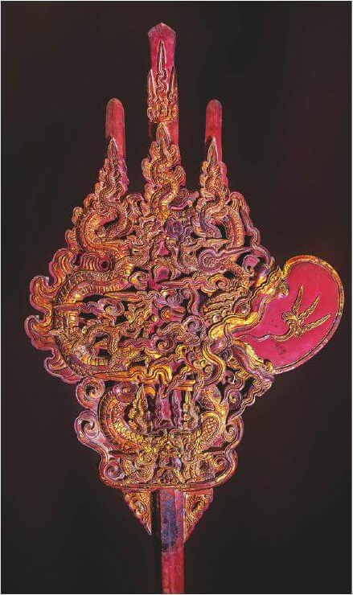

CỐ ĐÔ HOA LƯ
딘 왕 사당의 의장용 도끼


'부월(Phủ Việt)'이라 불리는 이 유물은 2020년 국무총리의 서명 결정으로 국보로 인정받았습니다.
부월이라는 명칭은 옛날 전투에 사용되던 도끼의 일종에서 유래했지만, 장인의 뛰어난 솜씨와 창의성을 거치며 이 무기는 신성한 물건, 즉 신권(神權), 위권(威權), 그리고 민족의 뿌리를 향한 의식의 최고 상징으로 승화되었습니다.
딘 띠엔 황 왕 사당의 부월 세트는 귀한 목재를 정성껏 가공하고 붉은 칠과 금박(sơn son thếp vàng)을 입혀 제작한 두 점의 유물로 구성되어 있습니다. 각 보물의 길이는 3미터 이상, 무게는 최대 45킬로그램에 달하며, 몸통 부분은 팔각형 단면을 가지고 있습니다.
이 부월 세트의 독보적인 가치를 만들어내는 것은 바로 17세기 후레(Hậu Lê) 시대 예술 양식의 특징을 짙게 담아낸 매우 정교하고 까다로운 조각 예술입니다.
부월의 머리 부분은 어미 용 한 마리와 새끼 용 다섯 마리의 형상이 정교하게 조각되어 깊은 상징적 가치를 지닙니다. 동양 문화에서 용은 힘, 권위, 고귀함, 번영을 상징하는 신령스러운 동물입니다. 새끼 용들 곁에 있는 어미 용의 모습은 불꽃 문양(đao lửa)과 결합되어 공동체의 결속, 신성한 모성애, 세대의 계승을 떠올리게 할 뿐만 아니라 민족의 굳건한 상무(尙武) 정신을 빛내줍니다. 군사적 기능을 지닌 무기에서 출발하여 장인들의 교묘한 손길을 거친 부월은 높은 미적 가치를 지닌 목조 조각 작품으로 탈바꿈하였으며, 베트남인의 정신생활 속에서 역사, 예술, 신앙 요소가 조화롭게 결합된 결과물입니다.
4세기가 넘는 시간 동안 존재해 온 부월 세트는 딘 띠엔 황 왕 사당의 문화 및 신앙 공간에서 떼어놓을 수 없는 일부가 되었습니다. 이 작품은 17세기 장인의 창조적 능력과 최고 수준의 목조 조각 기술을 보여주는 대표적인 증거일 뿐만 아니라 역사, 미술, 전통 신앙 연구를 위한 귀중한 사료입니다. 이 보물을 통해 이곳에 발을 들이는 우리 각자는 건국과 호국에 공헌한 영웅 호걸들에 대해 더없는 경외감과 자부심을 느끼게 됩니다.